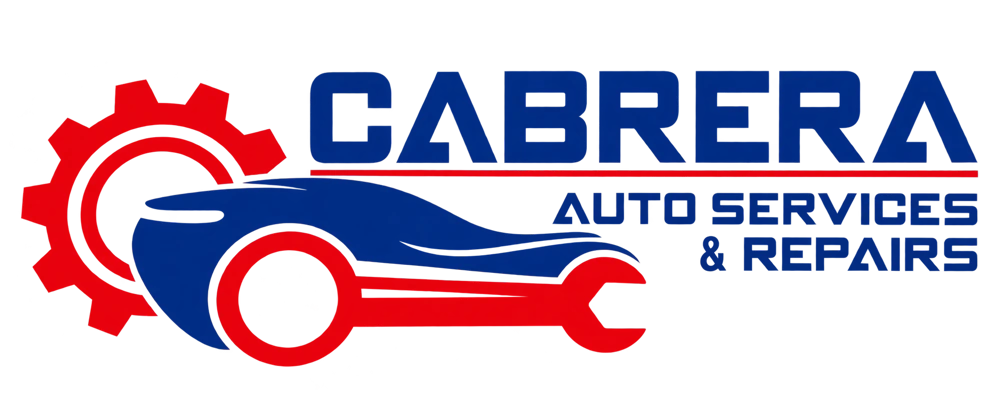
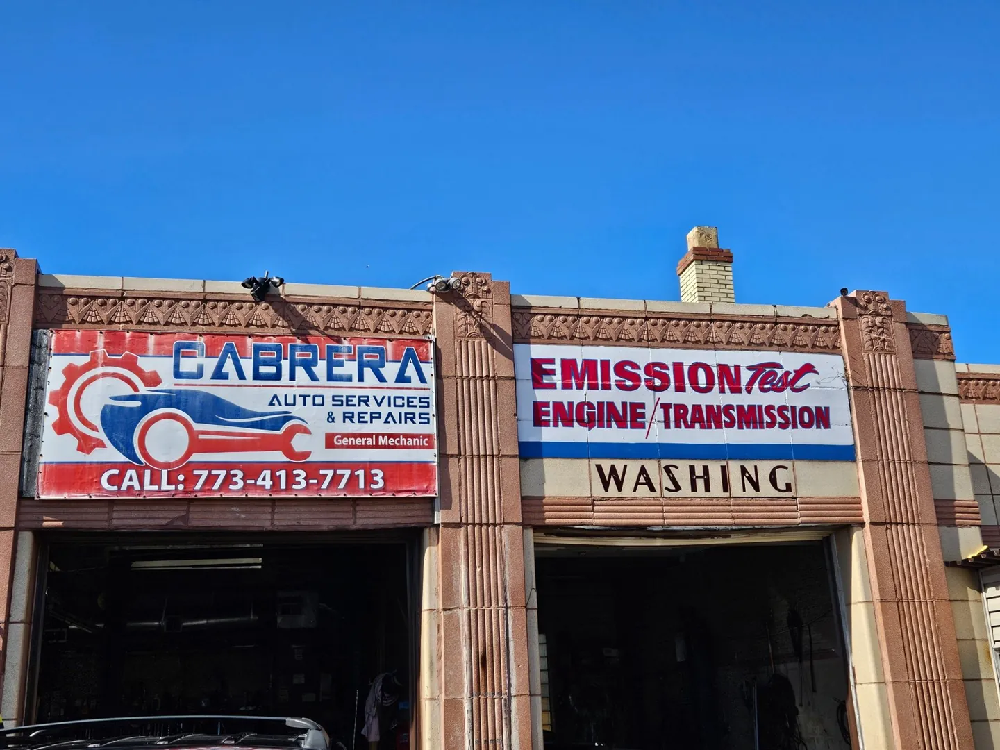
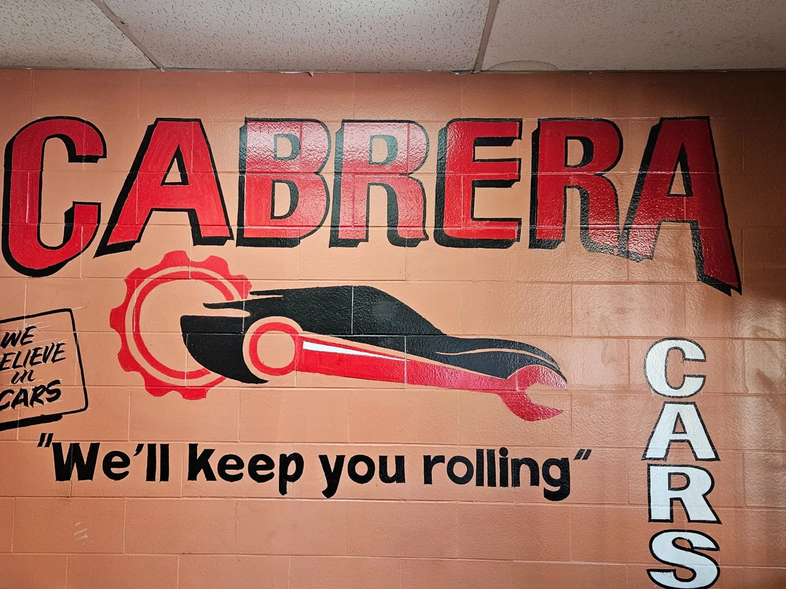
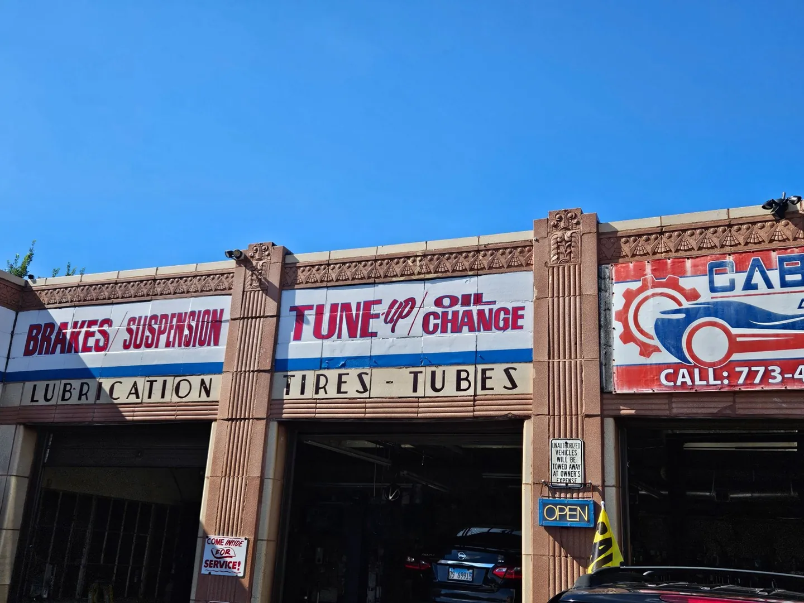
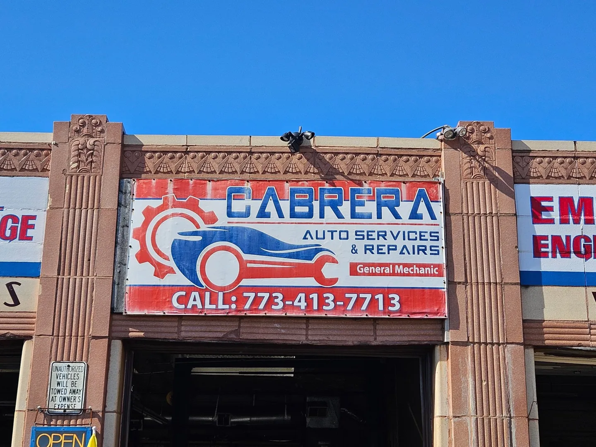

MAINTENANCE
Maintenance & tune-ups
Keep up with routine vehicle care and discuss tune-up needs for your car or SUV.
- General maintenance
- Tune-ups & running concerns
- Vehicle care planning

YOUR AUTO SHOP ON CENTRAL AVENUE
Take care of your next repair, plan routine maintenance, or ask about a vehicle. Start with Cabrera, right here in the neighborhood.

CARE FOR THE CAR YOU COUNT ON
Everyday upkeep. A smoother ride. Help when something feels off.
Contact Cabrera to discuss the service your vehicle needs.
Keep up with routine vehicle care and discuss tune-up needs for your car or SUV.
A squeak, vibration, or change when you stop? Talk to the shop about brake service.
For a rough ride or a new noise, describe the symptoms and discuss the next step.
PLAN YOUR NEXT REPAIR
Enter your vehicle, choose a repair, and see a calculation right here.
Uses sample parts allowances and $120/hour labor, not Cabrera’s approved prices. Vehicle details label your request; the calculation is not vehicle-specific.
Choose a repair to explore its sample parts and labor breakdown.
ENTER VEHICLE → SELECT REPAIR → SEE RANGEFor
Vehicle:
Excludes taxes, fees, diagnosis, and additional repairs.
This calculation uses the assumptions shown in the form, not a vehicle-specific parts or labor database. Actual costs can differ substantially.
Call the shop for vehicle-specific availability and a confirmed quote.

YOUR NEIGHBORHOOD AUTO REPAIR SHOP
Your car gets you to the things that matter. Give its next service visit a place on your calendar.
Cabrera Auto Services is an auto repair shop at 2200 N Central Avenue in Chicago. Whether you’re planning maintenance or have a repair concern, call to discuss your vehicle and arrange your visit directly with the shop.
Have your vehicle’s year, make, model, and approximate mileage ready. The more you can tell us about what you’re noticing, the easier it is to start the conversation.
TAKE A LOOK AROUND
Look for the Cabrera sign and service bays when you arrive.


LOCATION & CONTACT
Conveniently located on North Central Avenue in Chicago.
BEFORE YOUR VISIT
A few answers to help you plan.
Call (773) 413-7713 to discuss your vehicle, service needs, and availability. The shop will help you arrange your visit directly.
Your vehicle’s year, make, model, approximate mileage, and a description of the issue. Mention any warning lights and when the symptoms occur.
Use the repair estimator for a sample planning calculation with a parts and labor breakdown. Sample rates are not Cabrera’s prices. For a quote from Cabrera based on your vehicle and the work it needs, contact the shop directly by phone.
Find Cabrera Auto Services at 2200 N Central Ave, Chicago, IL 60639. Get directions in Google Maps.